Kindle-style preview of the EPUB. Scroll through each section below.
Cover
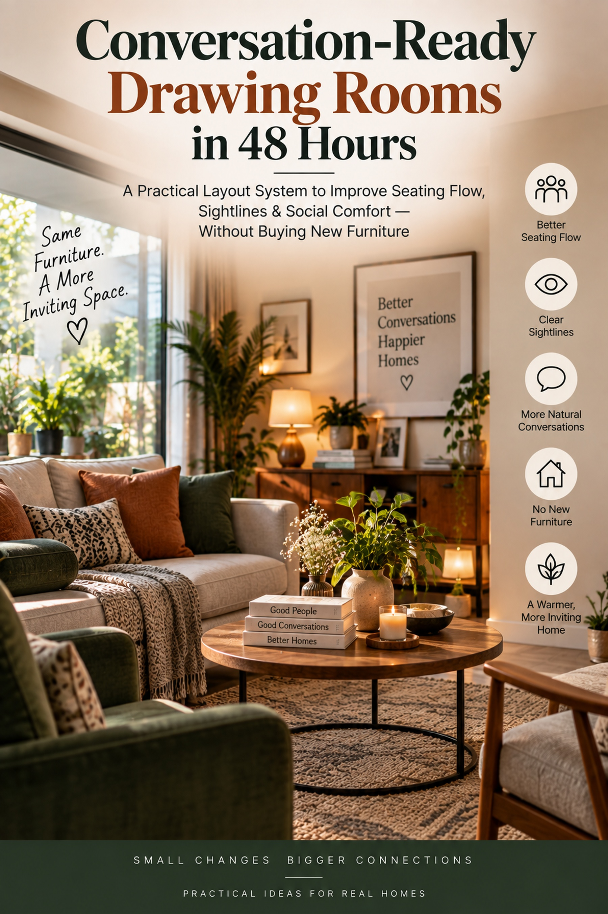
Chapter opener
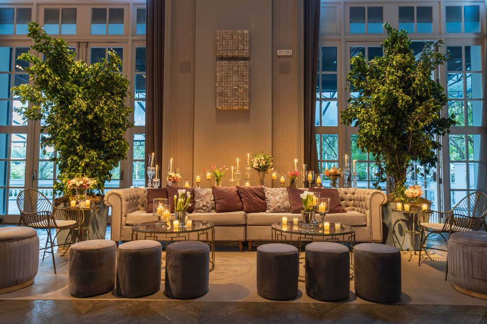
Chapter
Diagnose Your Room for Conversation Flow
Use one measurement language for the whole book. Seat-to-seat distance is front edge to front edge. Conversation-zone diameter is the overall size of the social cluster. Walkway clearance is clear floor between furniture edges. Seat rotation is how far a chair turns from its original wall-facing position. Conversation angle is the angle between two seats' viewing directions. Those two angles are different and must not be confused. Numbers are planning ranges, not standards. Conversation optimization should improve the room without making everyday living harder — television, reading, cleaning, entry, serving, and being alone still have to work. If anyone uses a mobility aid or has reduced mobility, prioritize that person's clearance over the ranges here.
Day 1 · Primary focal, secondary focal, social anchor
Day 1
Primary focal, secondary focal, social anchor
In this apartment
Problem: split attention. Room: Pune 1BHK, nine by eleven feet. Before: sofa faces a bright window while a busy bookshelf fights for the other wall. Decision: window is primary focal; bookshelf is secondary and quieted; coffee table is the social anchor; rug marks the cluster. Result: guests look at people first, then the view.
TV, window, fireplace, and art are visual focals. The coffee table is the social anchor. The rug is a spatial boundary.
Today's output: one primary focal point, one optional secondary, one social anchor, and a rug boundary.
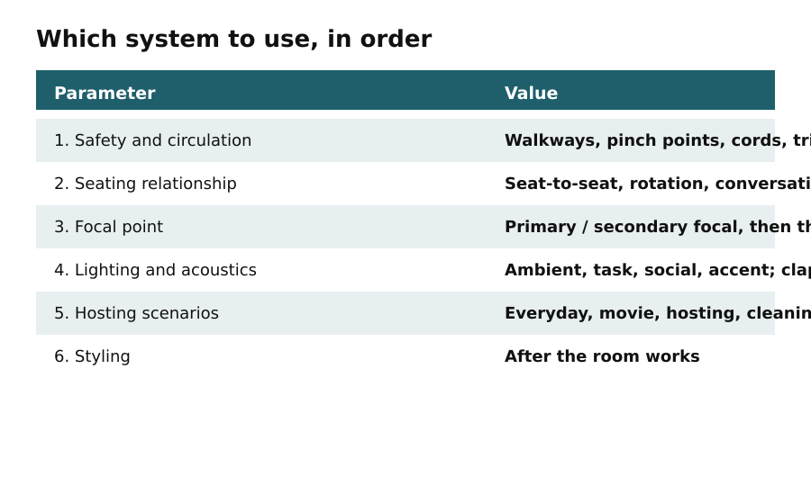
Every later idea sits under this stack.
Primary focal point: what people naturally look toward — often a window, fireplace, art, or television. Secondary focal point: supporting interest that must not steal the group. Social / functional anchor: the object people arrange around, usually the coffee table or ottoman. Rug: spatial boundary, not a focal point.
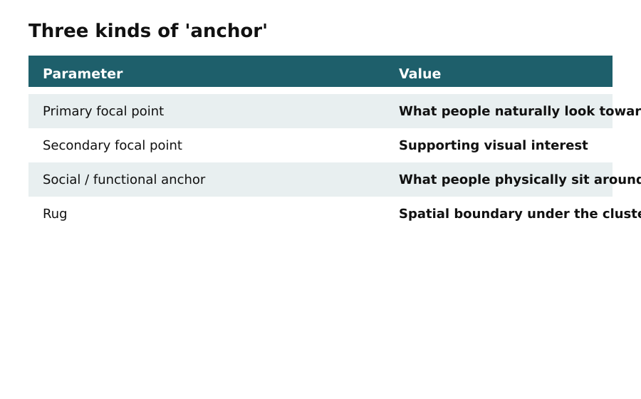
A TV is not a coffee table. A rug is not a fireplace.
Stand at the entry. Note what captures the gaze. Sit on the sofa. If you must pivot more than a quarter turn to see the primary focal, the seating is fighting the room. Conversation geometry still has to leave the television usable if the household actually watches it, and the kitchen path must stay a real walkway.
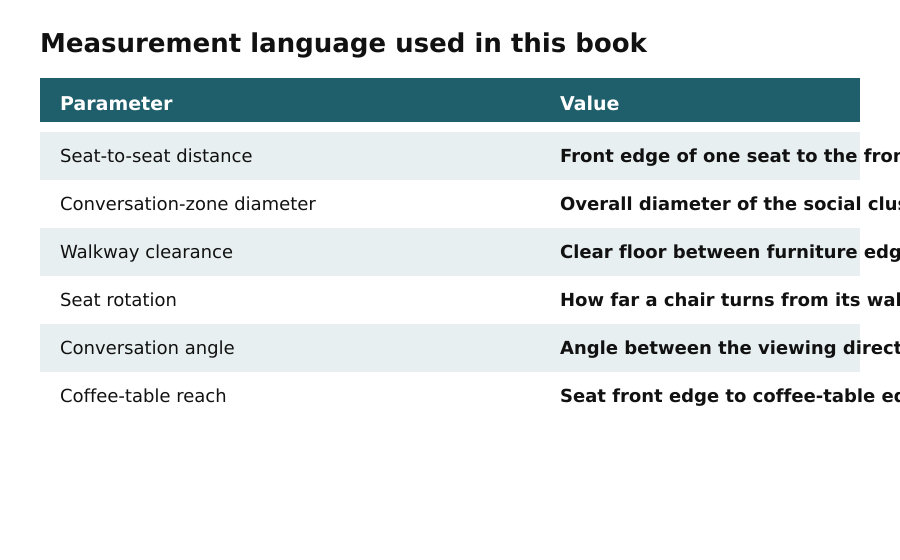
Planning ranges, not universal standards.
Before you move on
Name the primary focal
Name the social anchor
Confirm the everyday TV or window still works
Day 2 · Angles, The Triangular Conversation Set
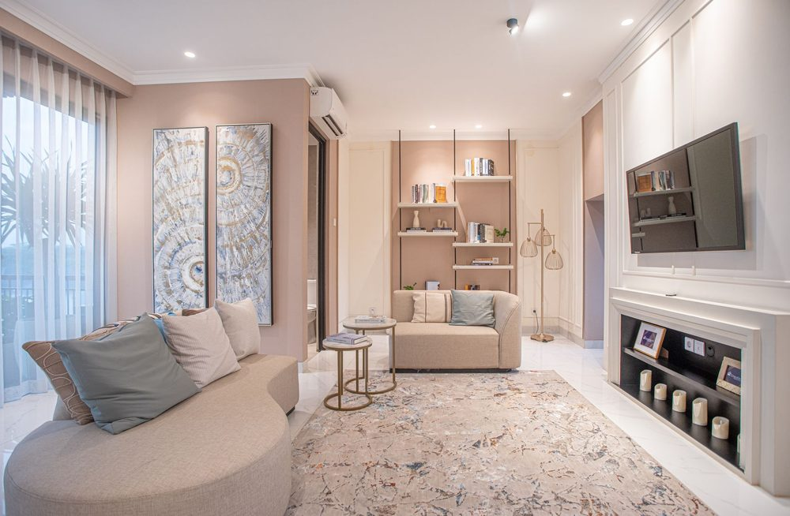
Day 2
Angles, The Triangular Conversation Set
In this apartment
Problem: interview seating. Room: Bengaluru rental, ten by twelve feet. Before: two chairs square-on to the sofa. Decision: rotate each chair 15–30° from the wall; set conversation angle near 100° to the sofa. Result: glances, not stare-downs.
Seat rotation (15–30° from the wall-facing start) is not the conversation angle (often 90–120° between two seats' viewing directions).
Today's output: one rotation number and one conversation-angle number, labeled as different.
Seat rotation and conversation angle are different measurements.
Seat rotation: how far a chair turns from its original wall-facing position. Planning range: about 15–30°. Templates that show 15°, 22°, or 30° are examples of rotation, not a sacred set.
Furniture and rooms vary. Measure, then test by sitting.
Conversation angle: the angle between the viewing directions of two seats. For a pair, a planning range is about 90–120°, with about 100° to the sofa as one worked example. Do not read 15–30° and 90–120° as competing versions of the same instruction.
Before you move on
Write rotation and conversation angle as two lines
Keep the coffee table below the sightline
Do not square seats face-to-face unless you want an interview
Day 3 · Flow, The Movement Map
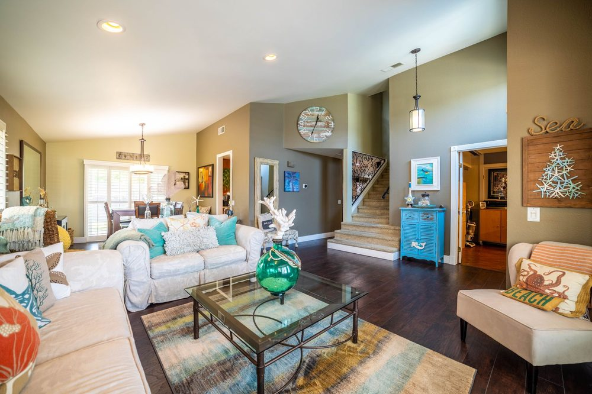
Day 3
Flow, The Movement Map
In this apartment
Problem: the kitchen path cuts the talk. Room: Mumbai 1BHK, eight by ten feet. Before: walkway between sofa and table. Decision: scoop the path behind seat backs at 36 inches, accept 30 at one door pinch. Result: talk survives a glass of water.
Preferred everyday path 36 inches; compact 30 inches; 24–30 inches only as a short pinch, never the main route.
Today's output: one everyday loop taped on the floor, labeled preferred / compact / pinch.
Twenty-four inches is never the primary everyday route.
Walkway clearance is clear floor between furniture edges — not seat-to-seat distance and not coffee-table reach. If the path between two facing seats is the only way to the kitchen, conversation 'won' and living lost. Reroute or move a seat.
If anyone uses a mobility aid or has reduced mobility, use that person's clearance. The ranges in this book are not accessibility standards.
Before you move on
Tape the everyday path
Measure the pinch and keep it short
Do not send the kitchen route between faces
Day 4 · Envelope, Light And Sound
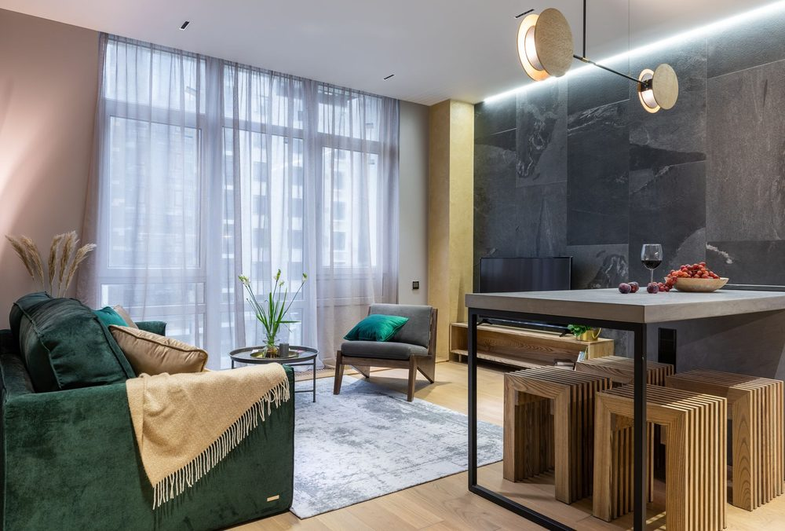
Day 4
Envelope, Light And Sound
In this apartment
Problem: faces look tired and voices bounce. Room: Chennai 1BHK. Before: one overhead and bare walls. Decision: social lamps at seated face height; clap test; one rug. Result: faces readable, less ring.
Ambient, task, social, and accent light. Good-enough sound: clap once in the center; if it rings, add soft surface.
Today's output: a lighting stack (ambient / task / social / accent) and one clap-test note.
Ambient is general room light. Task is reading, games, or serving. Social is warmer, lower light on the conversation zone. Accent is art or shelf light. During hosting, social light leads; ambient drops; task stays on the serving surface; accent stays quiet.
Clap test: stand in the center and clap once. If you hear a noticeable ring or echo, add or adjust a soft surface — rug, drape, throw — near the bounce. That is a practical 'good enough,' not a laboratory acoustic rating. This book does not claim a soundproof room.
Before you move on
Name the four light jobs
Clap once in the center
Do not call the room soundproof
Chapter opener
Chapter
The canonical 48-hour protocol
This is the only 48-hour protocol in the book. Later checklists reprint it; they do not invent a second plan. Day 1 sets circulation, seating relationship, and focals. Day 2 sets light, sound, host loop, and a live test. Use the measurement legend. Do not tighten the everyday path below 30 inches to 'win' conversation.
Day 1 · Day 1: Setting the Stage
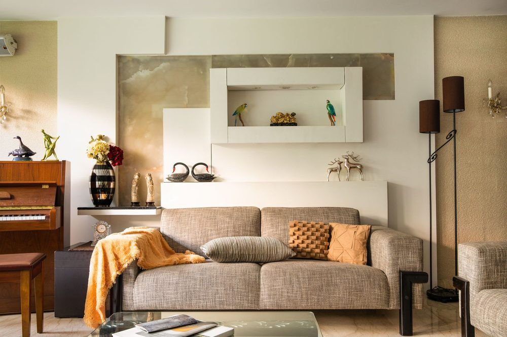
Day 1
Day 1: Setting the Stage
In this apartment
Problem: sofa-to-TV, chairs on the walls. Room: Pune 1BHK. Before: no path behind seats. Decision: clear pinch points, rotate seats 15–30° from the wall, set coffee-table reach at 16–20 inches. Result: two people can talk without blocking the door.
Safety and circulation first, then seating relationship, then focal.
Today's output: photos, a taped 36-inch preferred path (30 compact), seats rotated, table within reach.
Rotate seats 15–30° from their wall-facing start — that is seat rotation, not conversation angle. Then sit and check whether the pair's viewing directions open to about 90–120°. Coffee-table reach is 16–20 inches from the seat front edge, not a 30–36 inch walkway number.
Sit test: can two people see each other without a sharp neck turn, and can someone still walk to the kitchen without cutting between their faces? If conversation geometry blocks the everyday route, undo it.
Do this
Clear and reset the room perimeter (5 minutes)
Capture baseline photos (3 minutes)
Reposition anchors (15 minutes)
Rotate primary seats (10 minutes)
Sit test primary pair (5 minutes)
Walk loop test (5 minutes)
Before you move on
Clear stray furniture from walkways
Take baseline photos from four angles
Align the rug with the conversation triangle
Rotate chairs towards the center
Conduct sit tests for eye contact
Day 2 · Day 2: Fine-Tuning and Final Adjustments
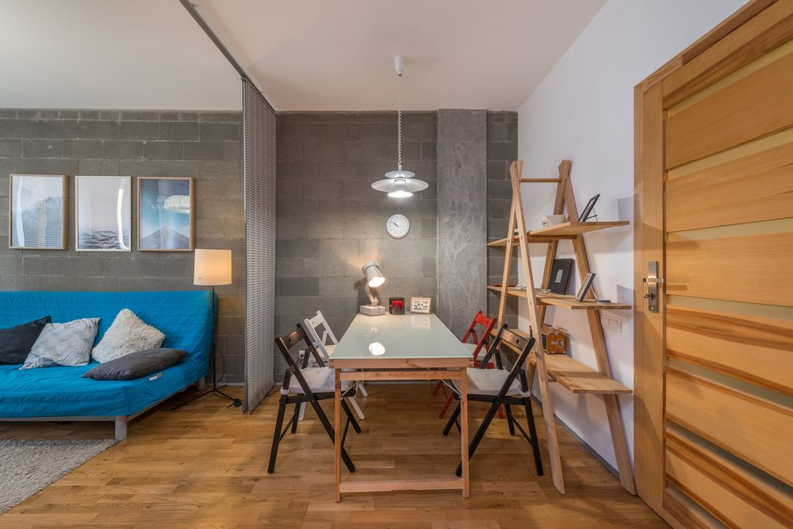
Day 2
Day 2: Fine-Tuning and Final Adjustments
In this apartment
In a compact studio in Bengaluru, Ravi wanted to create a welcoming space for friends to gather without feeling cramped. He followed the plan to optimize his layout.
Today's output: social lamps on, clap test noted, host loop walked both ways, pinch labeled if it exists.
Keep 30–36 inches behind seats when that space is the everyday path. A 24-inch gap is allowed only as a short pinch, never as the main circulation. Add a rug or drape if the clap rings.
Walk the host loop twice: kitchen to serving surface to guests, then collection back to the kitchen. The return trip is where small rooms go chaotic.
Do this
Fine-tune angles (10 minutes)
Create dedicated paths (20 minutes)
Soften acoustics (15 minutes)
Set host-ready cues (15 minutes)
Test a four-person mix (15 minutes)
Before you move on
Rotate seats for comfort
Ensure thirty to thirty-six inch buffers behind seating
Add soft furnishings to reduce echo
Place coasters and throws for hosting
Test seating arrangements with additional guests
Chapter opener
Chapter
Mapping Conversation Zones and Movement Loops
A conversation zone has a diameter (how large the cluster is) and seat-to-seat distances (how far fronts sit). Do not use 6–8 feet and 30–48 inches as if they measured the same thing. Movement loops belong to safety and circulation, which outrank seating relationship.
Day 1 · Understanding the Importance of Conversation Zones
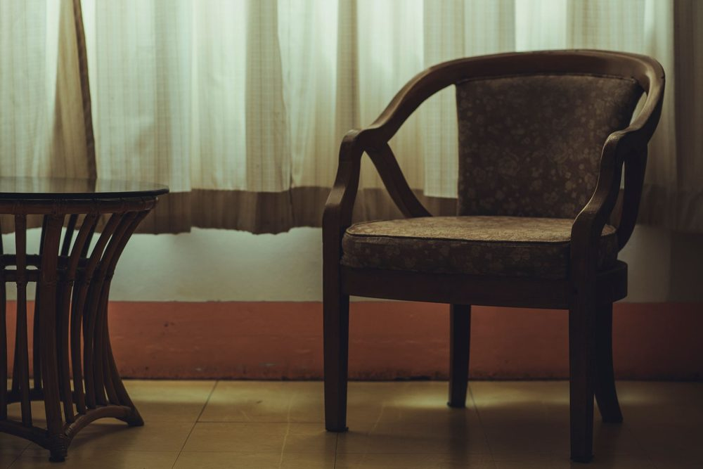
Day 1
Understanding the Importance of Conversation Zones
In this apartment
Problem: door-to-sofa is a runway. Room: Pune 1BHK. Before: no social anchor. Decision: coffee table as social anchor; pair seat-to-seat 30–48 inches; whole cluster inside an intimate zone about 6–8 feet across. Result: voices carry without a shout, and knees do not clash.
Zone diameter and seat-to-seat distance are different measurements.
Today's output: one zone-diameter number and one seat-to-seat number, both labeled.
Intimate conversation-zone diameter (planning range): about 6–8 feet — the overall cluster. Casual zone diameter: about 8–12 feet. Seat-to-seat, front edge to front edge: pairs about 30–48 inches; trios about 36–54 inches; group circles about 60–84 inches.
A pair 36 inches apart can sit inside a 7-foot zone. That is consistent. Treating 6–8 feet as if it were the gap between two chair fronts is how the old pages contradicted 30–48 inches.
Day 2 · Creating Movement Loops
Day 2
Creating Movement Loops
In this apartment
Problem: guests walk through talk. Room: Bengaluru rental, a wall you cannot move. Before: straight bisect. Decision: curve behind backs; 36-inch preferred. Result: chat stays seated.
Loops go around clusters. Everyday width follows the walkway hierarchy.
Today's output: one loop that never bisects two faces.
Tape a path that passes behind seat backs and along rug edges. Preferred 36 inches. Compact 30 inches. A 24–30 inch pinch is only for a short squeeze at a door or column — not the route you use all day.
If the only path to the kitchen is between two seats, seating relationship is over-optimized. Move a seat.
Day 3 · Incorporating Anchors, Pivots, and Perches
Day 3
Incorporating Anchors, Pivots, and Perches
In this apartment
In a Mumbai flat with a window on only one side, Neha wants to create a welcoming space for gatherings. She needs to strategically place her anchor, pivot, and perches to maximize comfort and connection.
Coffee table = social anchor. Pivot = view of entry. Perches live in the casual zone, not the pair band.
Today's output: social anchor, one pivot seat, perches parked outside the pair band.
Place seats so fronts sit in the right seat-to-seat band. Perches (stools, benches) belong in the casual zone diameter (about 8–12 feet), not in the 30–48 inch pair gap, or the core becomes a crowd.
The pivot watches the door without sitting in the everyday walkway.
Chapter opener
Chapter
Optimize Sightlines, Angles, and Focal Points
This chapter is seating relationship plus focal point plus lighting — layers 2, 3, and 4. It is not a second 48-hour protocol. Use the canonical 48-hour chapter to sequence the work.
Part 4 · Optimize Sightlines, Angles, and Focal Points
Part 4
Optimize Sightlines, Angles, and Focal Points
Rotation 15–30° from the wall. Conversation angle is a different number. Heights and light are planning ranges.
Today's output: primary focal named, seats rotated, corridor of faces clear, lamps in the social layer.
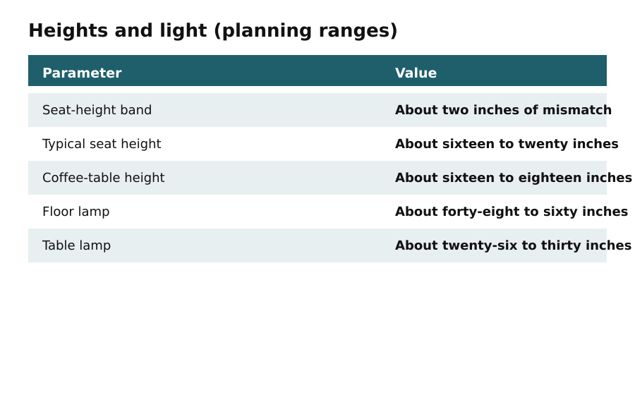
Starting points. Sit and look.
Seat rotation: 15–30° from the wall-facing start. Conversation angle: the opening between viewing directions (pairs often about 90–120°). Intimate zone diameter about 6–8 feet; casual about 8–12 feet. Seat-to-seat stays in the pair / trio / group bands. Coffee-table reach 16–20 inches from the seat edge. Table height about 16–18 inches. Seat height neighborhood about 16–20 inches, with about 2 inches of mismatch as a planning tolerance. Floor lamps often about 48–60 inches; table lamps about 26–30 inches. These are starting points.
Lighting stack: ambient (general), task (reading / game / serving), social (warm lower light on faces), accent (art). Hosting: social on, ambient down, task on the serving surface, accent quiet. Keep the face corridor empty from knee height to head height.
Case — TV and fireplace: Problem: two visual focals. Decision: TV remains usable as primary or secondary on purpose; coffee table stays the social anchor; sofa rotation about 20°; one chair conversation-angle toward the group. Result: watchers and talkers share the room. Case — window silhouette: rotate off the glare; add social light. Case — long room: do not use an 8–12 foot seat-to-seat gap for a pair; use zone diameter for the room length and pull a micro-cluster into the pair band.
Do not run a second hour-by-hour plan here. When the geometry works, lock tape marks and stop.
Before you move on
Label rotation vs conversation angle
Keep the everyday TV or window usable
Social light on faces, not behind heads
Chapter opener
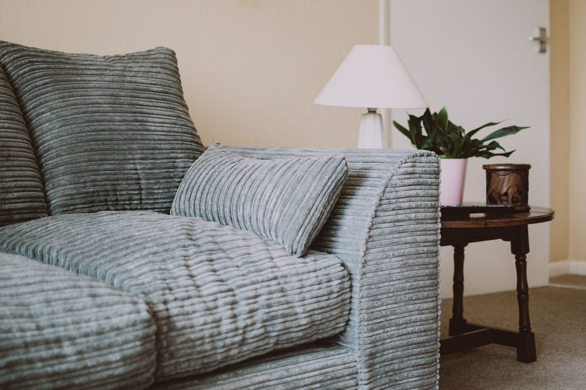
Chapter
Align Traffic Paths and Tune Acoustics
Layer 1: safety and circulation. Layer 4: lighting and acoustics. Walkway hierarchy is 36 / 30 / pinch. The clap test is the good-enough acoustic target.
Day One Morning · Movement Loops
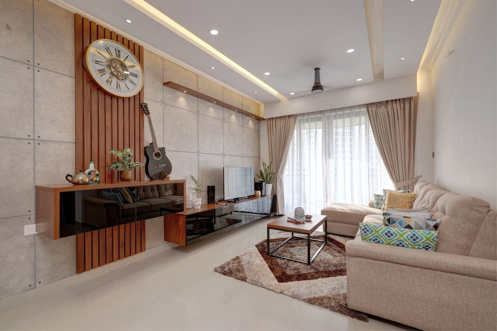
Day One Morning
Movement Loops
In this apartment
In a 1BHK apartment in Pune, resident Priya struggles with her living room layout. The sofa and chairs are arranged awkwardly, forcing guests to navigate through tight spaces. By creating movement loops, she can enhance the flow of her space.
Preferred 36 inches. Compact 30. Pinch 24–30 only where short and unavoidable.
Today's output: a taped loop with three labels: preferred, compact, pinch.
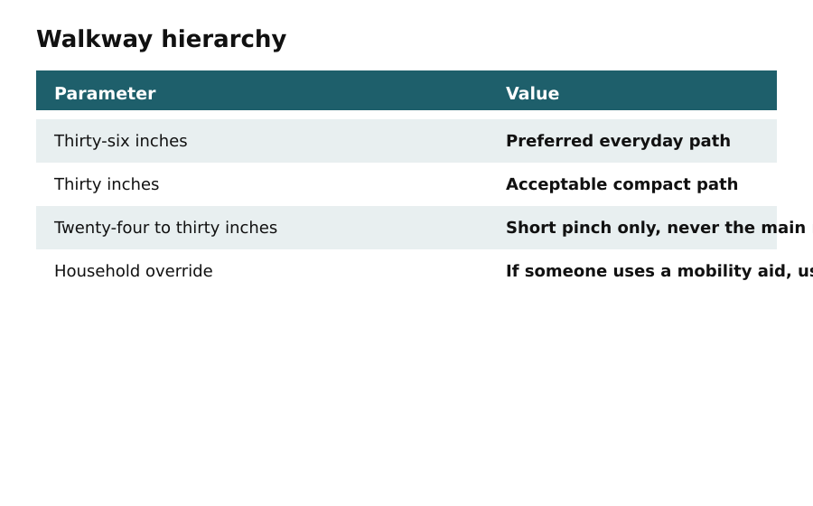
Twenty-four inches is never the primary everyday route.
If a path cuts between two chairs, rotate one seat or move the rug. Do not call a 24-inch alley your everyday route even if a tray can squeeze through.
Mobility override: if a household member needs more clearance than 36 inches, that need wins.
Day One Afternoon · Buffer Rings
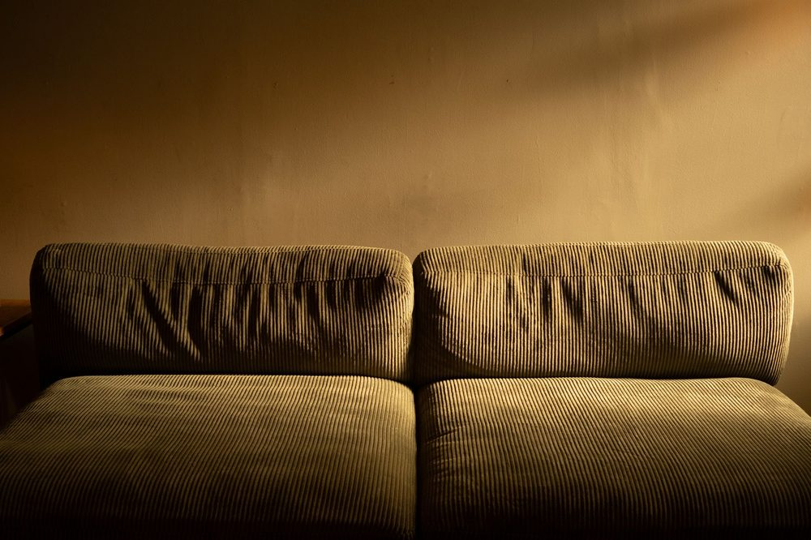
Day One Afternoon
Buffer Rings
In this apartment
In a Bengaluru rental, Rohan finds his accent chair feels cramped against the wall. By establishing buffer rings, he can create a more comfortable seating arrangement.
The space behind seats is walkway clearance, measured furniture edge to wall or next edge.
Today's output: 36 inches behind the chair that faces the everyday path; less only on a dead corner.
Buffer rings are psychological and physical. They are not a second width system. Use the same 36 / 30 / pinch hierarchy.
Day One Evening · Entry Zones
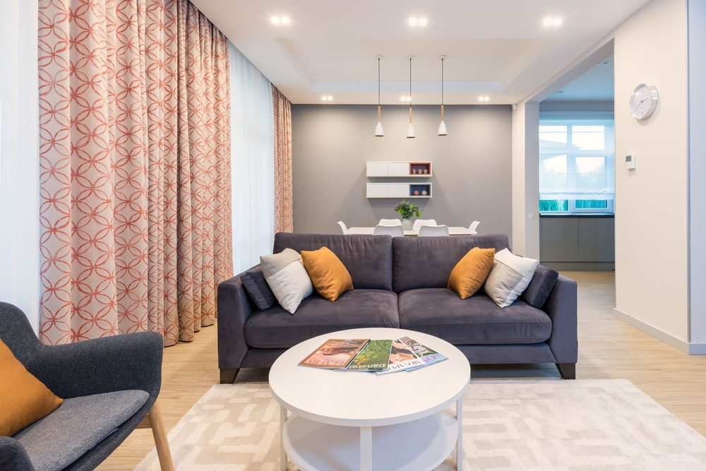
Day One Evening
Entry Zones
In this apartment
In a Mumbai flat, Neha's entryway leads directly into her living room, causing guests to interrupt conversations. By creating an entry zone, she can improve the flow of arrivals.
Entry zones beside backs reduce social pressure for arrivals.
The first thirty seconds of a guest's arrival can set the tone for the entire visit. If your door opens directly onto seating, guests may feel pressured to interrupt ongoing conversations. To alleviate this, relocate a chair or rotate the seating arrangement so that the entry zone is beside a seat back rather than in front of it. If space allows, consider adding a console table or a narrow bench near the door to create a designated hello zone.
In Neha's flat, she can reposition her sofa and chairs to create a more welcoming entry area. By placing a small bench near the door, guests can pause to leave their coats and bags, allowing for a smoother transition into the living room. This adjustment will help guests feel more comfortable and reduce the pressure of entering a conversation directly.
By establishing a clear entry zone, Neha can enhance the overall experience for her guests, making them feel more at ease as they arrive and settle into the space.
Day Two Morning · Host Pathway
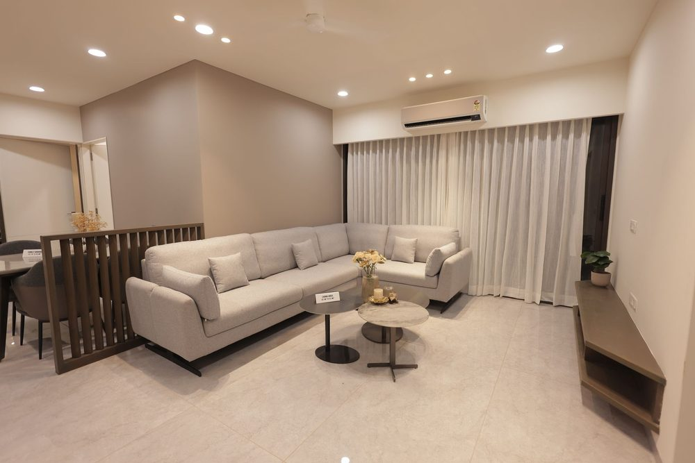
Day Two Morning
Host Pathway
In this apartment
Problem: snack service splits talk. Room: Chennai compact drawing room. Before: coffee table as staging. Decision: sideboard at the cluster edge; loop behind backs both ways. Result: plates leave as they arrived.
Kitchen → serving surface → guests → collection → kitchen. Never between eyes.
Today's output: one host loop walked empty-handed, then with a tray, then with dirty dishes.
Serving is only half. Collection is where small drawing rooms fail. Map kitchen to a serving surface that is not the coffee table, then to guests, then the same path back. Keep the dialogue axis empty.
Felt pads and coasters reduce clatter. They do not make a path wide enough. Measure the walkway.
Before you move on
Walk serve
Walk collect
Keep the coffee table for hands, not plating
Day Two Afternoon · Acoustic Ladder
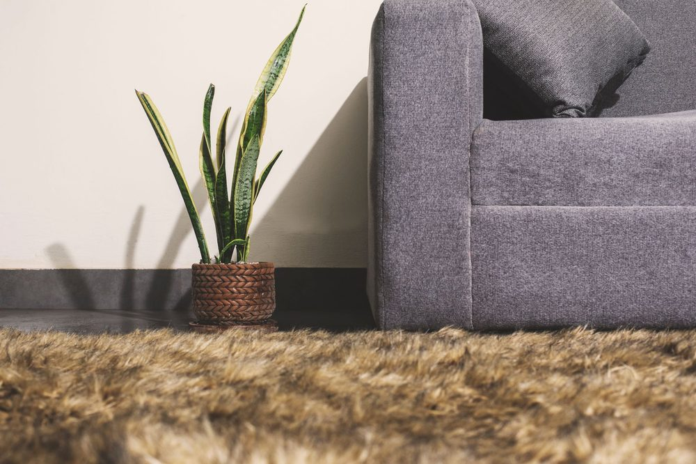
Day Two Afternoon
Acoustic Ladder
In this apartment
In a Kolkata apartment, Meera's living room has hard surfaces that amplify sound. By implementing an acoustic ladder, she can create a more pleasant listening environment.
Clap once in the center. Ring → add or adjust a soft surface. Stop when speech is easy.
Today's output: clap-test result, then the smallest soft-surface change that removes the ring.
The acoustic ladder (rug, drape, fabric, books) is optional detail. The good-enough test is the clap. If the clap is already dull, do not keep adding foam 'for conversation.' Over-softening can make the room feel dead; this is a comfort heuristic, not a studio spec.
Day Two Evening · Rugs As Signals
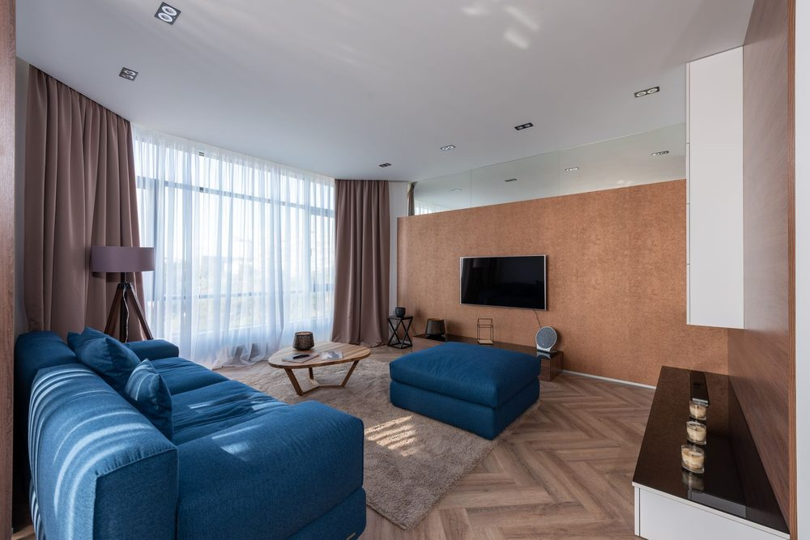
Day Two Evening
Rugs As Signals
In this apartment
In a small flat in Hyderabad, Sita's rug is too small, causing confusion about movement in her living room. By choosing the right rug size, she can guide guests effectively.
Rugs bound the cluster. A rug edge on a major circulation route is a trip hazard.
Today's output: front legs on the rug; no rug edge across the everyday path; pad checked.
Never allow a rug edge to become a trip hazard on a major circulation route. Use a pad. Flatten curling corners. Stop sliding. Confirm door clearance so the door does not catch the rug. The rug is a spatial signal, not décor on the runway.
Chapter opener
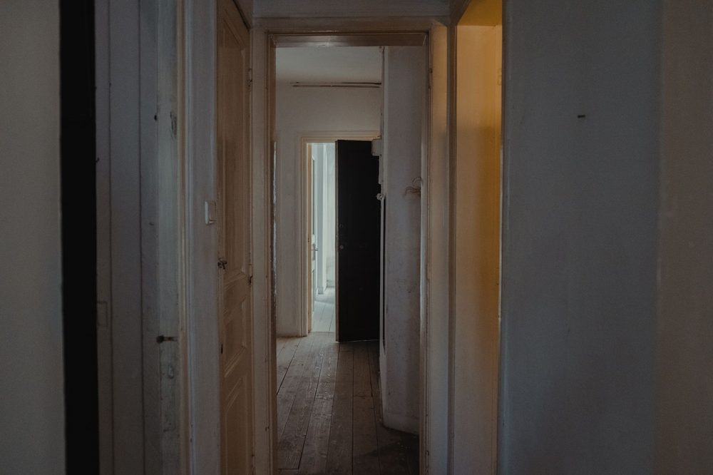
Chapter
Room Shape Playbooks: Square, Rectangular, and Open-Concept
This chapter explores how to optimize your living space layout based on the shape of your room. By applying specific design strategies, you can enhance conversation flow and comfort without the need for new furniture.
Day 1 · Square Rooms: Symmetry Packs
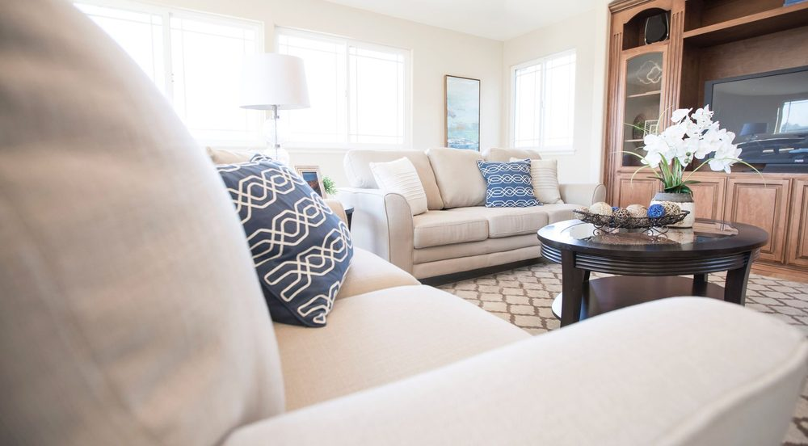
Day 1
Square Rooms: Symmetry Packs
In this apartment
In a 12-foot by 12-foot square room in Pune, resident Priya struggled with her seating arrangement. Her sofa faced the wall, with two chairs pushed against the side walls, making conversations feel distant and awkward.
Symmetry stabilizes square rooms by creating balanced seating triangles around a clear anchor.
Start with a social anchor (coffee table or ottoman), not a visual focal unless they coincide. Sofa faces the anchor. Two chairs toe in with a seat rotation of about 15–30° from the walls.
For this trio, seat-to-seat (front to front) sits in the 36–54 inch band. The whole cluster should still fit an intimate zone diameter of about 6–8 feet. Seven feet between chair front and sofa front is too far for a trio — that number was a zone-diameter leftover.
Coffee-table reach: 16–20 inches from each seat edge. If a fireplace is offset, it can be the primary focal without being the social anchor.
Before you move on
Identify the central anchor in your square room.
Arrange the sofa facing the anchor and place two chairs to form a triangle.
Angle the chairs inward to promote conversation.
Maintain appropriate distances between seating points.
Day 2 · Rectangular Rooms: Zone Ladders
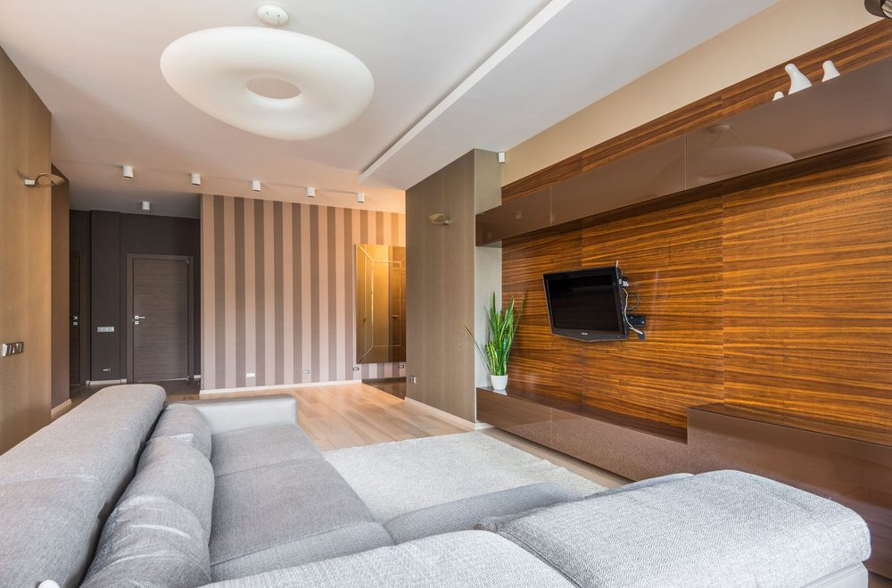
Day 2
Rectangular Rooms: Zone Ladders
In this apartment
In a 12-foot by 18-foot rectangular rental in Bengaluru, Raj's long sofa faced the television, with a single chair in the far corner. This arrangement made conversations feel strained and distant.
Zone ladders distribute interest and break the tunnel effect in rectangular rooms.
Primary cluster near the visual focal, but the coffee table remains the social anchor. Sofa on the long wall; chairs in the trio seat-to-seat band, not an 8-foot face-off. Eight to twelve feet is casual zone diameter for the length of the room, not the gap between two people who should talk.
A secondary perch cluster halfway down the room lives in the casual zone. Leave 30–36 inches of walkway between clusters — that is circulation, not conversation distance.
Keep the everyday TV usable if the household watches it. Conversation-ready does not mean TV-hostile.
Before you move on
Identify the focal anchor in your rectangular room.
Arrange the main cluster near the anchor and add a secondary perch.
Position perpendicular elements to break the tunnel effect.
Maintain adequate spacing for movement.
Day 3 · Open Concept Spaces: Conversation Ribbons
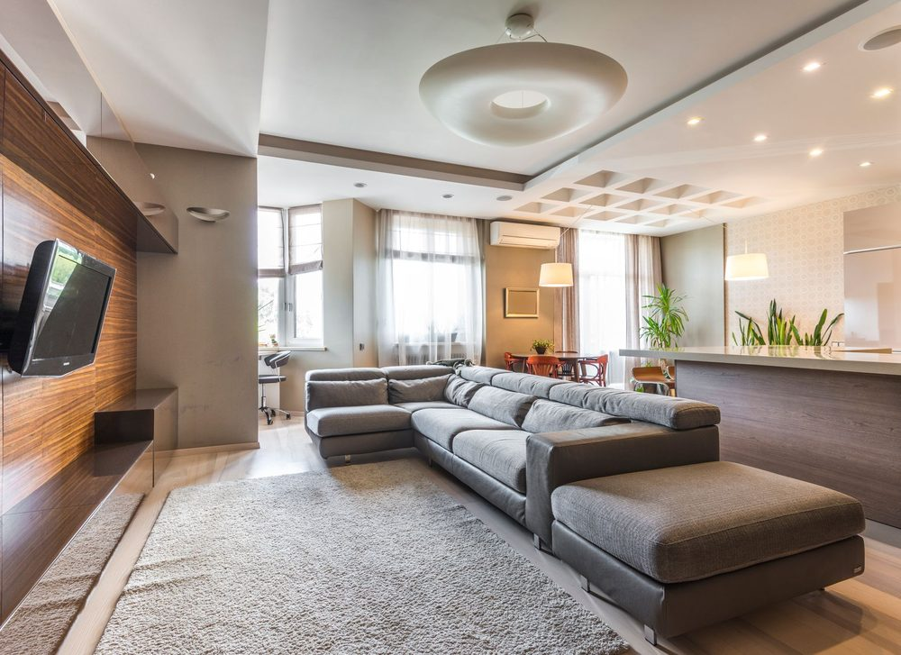
Day 3
Open Concept Spaces: Conversation Ribbons
In this apartment
In a spacious open-concept living-dining-kitchen area in Mumbai, Aditi found her sectional sofa near the large windows, but traffic cut through the center, disrupting conversations.
Conversation ribbons help define seating clusters and pathways in open concept spaces.
A conversation ribbon is a cluster with a social anchor, not a styling strip. Coffee-table reach stays 16–20 inches from seat edges. The outer edge of the ribbon must leave a walkway: 36 preferred, 30 compact, never a 24-inch everyday route into the kitchen.
Open plans still need Everyday / Movie / Hosting / Cleaning modes. Do not freeze the ribbon for guests and make weeknight circulation worse.
Prevent sound and attention bleed by aligning seat backs toward adjacent functions. If the dining table is behind the seating cluster, keep the chair backs facing that direction to signal that conversation should remain within the ribbon.
Before you move on
Identify the main anchor in your open concept space.
Shape the seating into a U around the anchor.
Ensure pathways around the seating are clear and wide enough.
Align seat backs toward adjacent functions to maintain focus.
Chapter opener
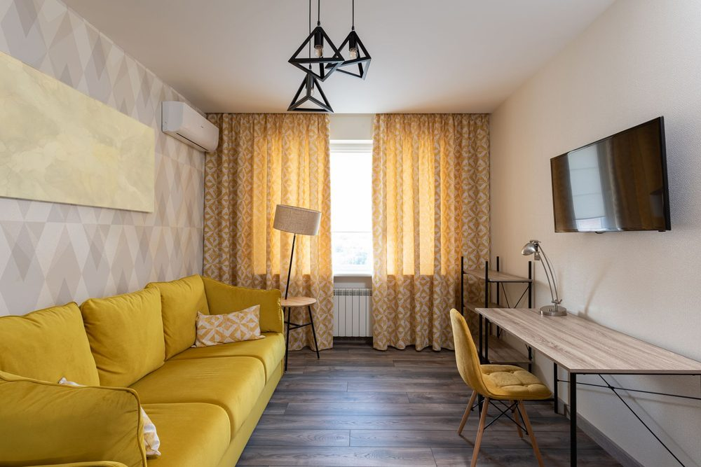
Chapter
No-Buy Methods and Small/Large Space Solutions
Transform your drawing room without spending a cent. This chapter provides practical, measurement-free strategies to optimize seating arrangements for both small and large spaces, ensuring conversations flow smoothly and guests feel comfortable.
Day 1 · Understanding the Problem
Day 1
Understanding the Problem
In this apartment
In a 1BHK apartment in Pune, resident Priya found her living room cramped with a sofa against the longest wall and a single armchair in the corner. Conversations felt strained as the chair faced the television instead of the sofa, leading to awkward pauses.
Most rooms default to showroom placement, which can hinder conversation flow.
The default arrangement of sofas lining walls and chairs drifting into corners may appear orderly, but it often disrupts the natural flow of conversation. In Priya's case, the armchair's position meant that guests were too far apart to engage comfortably, leading to strained interactions.
To remedy this, it’s essential to recognize that the core challenge lies in distance and direction. Seats should face each other within a friendly arc to facilitate eye contact and conversation. In small rooms, the fear of crowding can prevent necessary adjustments, while large rooms often feel like lobbies due to excessive spacing.
By understanding these dynamics, you can begin to see how simple adjustments can create a more inviting atmosphere. Priya's living room could benefit from a few strategic moves to enhance social interaction without the need for new purchases.
Day 2 · Implementing the Flow Without Buying Framework
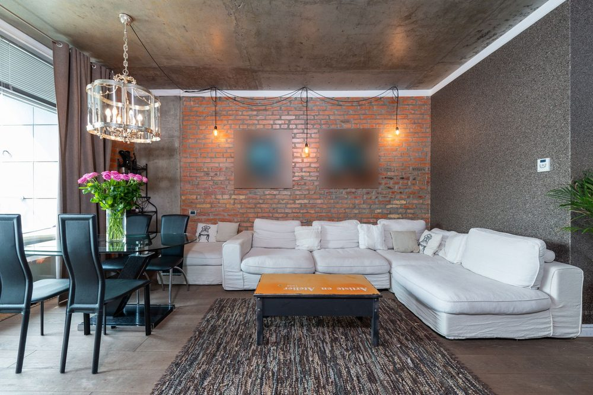
Day 2
Implementing the Flow Without Buying Framework
In this apartment
In a Bengaluru rental, Rohan faced a load-bearing wall that limited his options for furniture placement. He needed to create a welcoming space for friends without buying new furniture.
The Flow Without Buying framework allows you to shape your room using four categories of moves: swaps, rotates, anchors, and connectors.
Rohan began by swapping his most comfortable chair, which was originally positioned for television viewing, with a lighter chair near the sofa. This simple swap allowed the comfortable chair to become a central piece for conversation, facing the sofa within a gentle arc.
Next, Rohan made a slight rotation of the sofa to angle it toward the chair. This adjustment, even if minor, significantly changed the room's energy. He tested the angle by placing a book under one leg of the sofa temporarily to see if the new arrangement felt warmer and more inviting.
Finally, he defined a compact anchor using a low trunk placed between the sofa and the chair. This anchor not only created a focal point but also encouraged conversations to flow more naturally, as it kept voices close and engaged.
Day 3 · Creating Clusters in Large Spaces
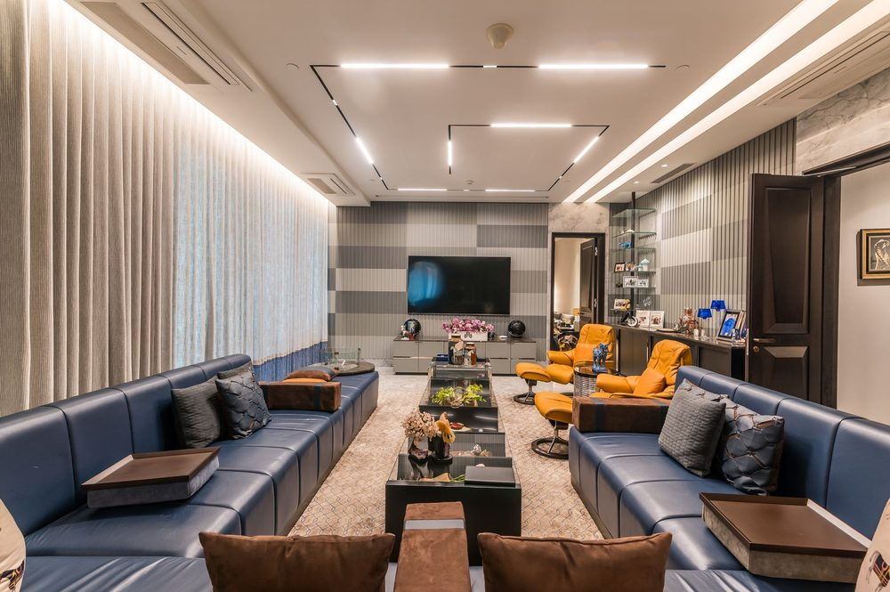
Day 3
Creating Clusters in Large Spaces
In this apartment
In a spacious suburban family lounge in Mumbai, the layout felt disjointed with a sofa set and two tall wing chairs spread too far apart, leading to fragmented conversations among family members.
In large rooms, creating multiple clusters connected visually prevents conversation scatter.
To address the issue, the family decided to create two distinct clusters. The first cluster consisted of the sofa, one wing chair, and an ottoman as the anchor. The second cluster featured a loveseat, a bench, and a side table as its anchor. This arrangement allowed for more intimate gatherings without losing the overall cohesion of the room.
Connecting the clusters visually was crucial. The family used a long runner to bridge the two areas, along with strategically placed lamps at face height to enhance sightlines. This visual thread helped unify the space, making it feel like one social scene rather than a waiting area.
By moving the tall wing chairs closer to the walls, they reduced visual blockage and created a more inviting atmosphere. The result was a lively gathering space where adults could converse in one cluster while teens enjoyed their own space in the other.
Day 4 · Final Adjustments and Testing
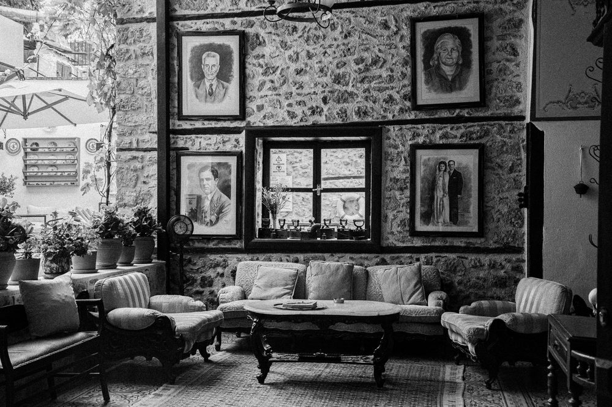
Day 4
Final Adjustments and Testing
In this apartment
After rearranging her living room in a compact city studio in Delhi, Neha wanted to ensure that her new layout encouraged comfortable conversations and a welcoming atmosphere for guests.
Subtle cues and supportive surfaces enhance the inviting nature of your space.
Neha began by placing side tables within easy reach of each primary seat. She used the elbow drop test to ensure that each table was positioned correctly, allowing guests to comfortably set down drinks and personal items without leaning awkwardly.
To further enhance the inviting atmosphere, she added subtle cues. A folded throw draped over a chair arm signaled to guests that the seat was available, while a tray with coasters on the anchor provided a shared space for drinks. Neha also turned on lamps at face height to create a warm, flattering light that encouraged longer conversations.
Finally, she invited a friend over for a short chat to test the new arrangement. Observing where their eyes drifted and how easily they could reach for items helped Neha make micro-adjustments to angles and distances, ensuring that the space felt comfortable and engaging.
Chapter opener
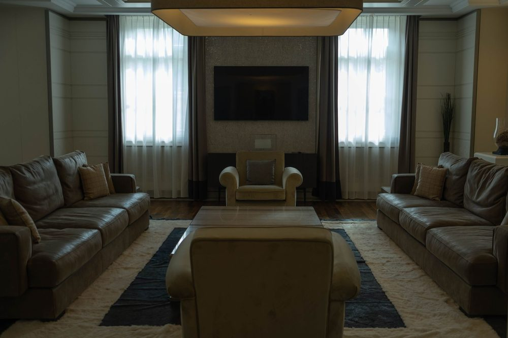
Chapter
Host-Ready Scenarios and Ongoing Maintenance
Layer 5: hosting scenarios. The switchboard has four household modes first — Everyday, Movie/TV, Hosting, Cleaning — then the party types (intimate, games, mixed-age). Hosting must not destroy Tuesday night.
Day 1 · Intimate Chats: Anchored Triangle And Warm Lamp Line
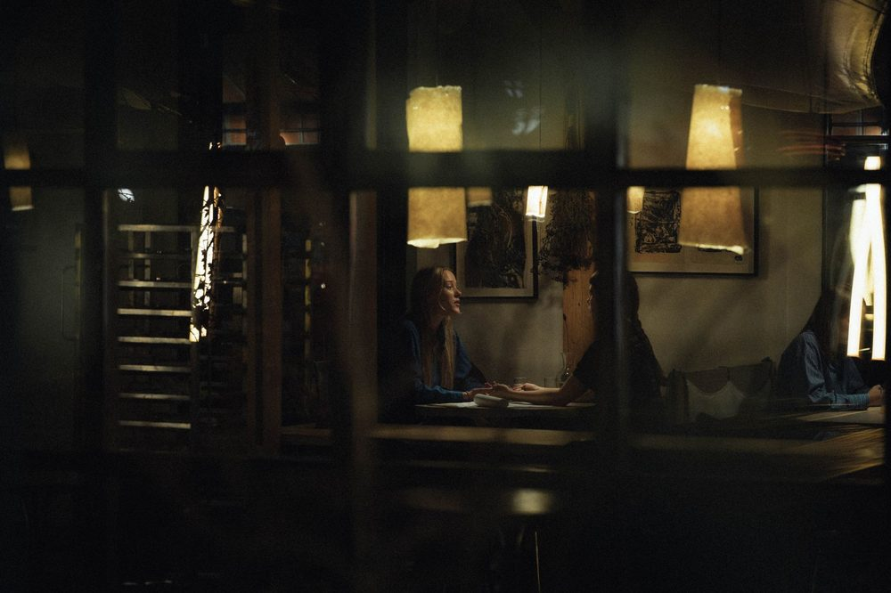
Day 1
Intimate Chats: Anchored Triangle And Warm Lamp Line
In this apartment
Riya and Amit live in a 1BHK in Pune with a 9-foot living room. They want to create a cozy space for intimate conversations with friends.
An anchored triangle layout fosters rich conversations.
To create an anchored triangle, start with a stable anchor like a sofa or a deep chair. Position two additional seats to form a triangle, ensuring they face inward at slight angles. This arrangement encourages easy conversation without the distraction of a dominant screen. Aim for equal seat height to avoid anyone feeling elevated above the others, and keep a small side table within reach of each seat for drinks and phones.
Layering the warm lamp line is essential for creating a flattering atmosphere. Place a lamp behind the anchor seat and another near the smaller chair, dimming them to a gentle level. If overhead lighting is present, keep it off or very low to maintain a cozy ambiance. Ensure clear sightlines between each seat, pushing tall decor to the edges so that everyone can see each other's eyes without straining.
Riya and Amit can use a simple plant or a stack of books as a soft focus point on the low table. This setup not only enhances the conversation but also makes the room feel inviting and warm.
Before you move on
Arrange seating in an anchored triangle
Ensure equal seat heights
Dim lamps for warm lighting
Maintain clear sightlines
Day 2 · Game Nights: Stable Surface And Equal Sightlines
Day 2
Game Nights: Stable Surface And Equal Sightlines
In this apartment
Vikram hosts a game night in his Bengaluru rental, which has a load-bearing wall that limits furniture placement.
A stable surface with equal sightlines enhances game night enjoyment.
For game nights, the most stable surface should be at the center of the arrangement. Vikram can use a coffee table as the game surface, ensuring that it is positioned to allow each player natural elbow space and clear access to cards or boards. The key is to maintain equal distances between seats, allowing everyone to engage without feeling cramped.
To facilitate interaction, angle chairs slightly toward the center while keeping views across the table open. This setup encourages banter and quick comments, making the game more enjoyable. Adding small aids like a low ottoman can provide extra seating or a place to set snacks, enhancing comfort during longer games.
Lighting is crucial during game nights. Vikram should use two or three lamps that provide ample light without glare. If overhead light is available, it should be diffused to avoid harshness. Snacks should be kept at arm's length on a narrow console or nesting tables to prevent clutter on the game surface.
Before you move on
Position stable surface at the center
Angle chairs for equal sightlines
Use bright but gentle lighting
Keep snacks off the game surface
Day 3 · Mixed Age Gatherings: Perches, Pivot Seat, And Traffic Protection
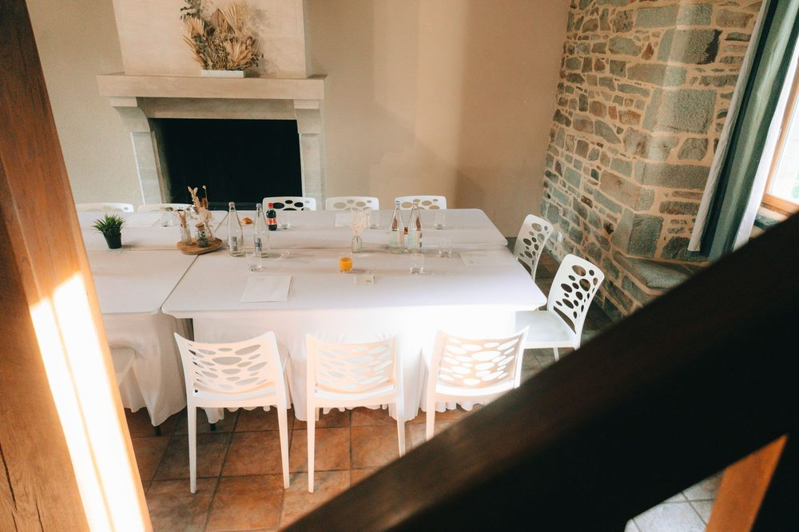
Day 3
Mixed Age Gatherings: Perches, Pivot Seat, And Traffic Protection
In this apartment
Anjali invites her family over to her Mumbai flat, which has a window on only one side, for a mixed-age gathering.
Flexible seating and clear pathways accommodate diverse age groups.
For gatherings that include toddlers, teens, adults, and elders, Anjali should start with a pivot seat that offers a broad view of the room. This could be a corner chair that can face the main cluster or rotate toward play on the rug. Adding perches like stools or ottomans along the edges allows guests to drop in for a quick chat without committing to a deep seat.
It's important to keep one clear path from the entry to the main seating area. Anjali can use a runner or a low shelf to visually guide guests while minimizing traffic through the main conversation area. This layout helps maintain a comfortable flow and prevents interruptions during conversations.
Lighting should be layered to accommodate various activities. A gentle pool of light on the rug helps parents keep an eye on younger guests, while warm side lighting supports conversation. Sound softeners like a folded throw over a noisy tray and a rug with some pile can help reduce echo, ensuring that small voices are heard.
Before you move on
Use a pivot seat for visibility
Add perches for flexible seating
Maintain clear pathways
Layer lighting for different activities
Day 4 · Scenario switchboard: household modes first
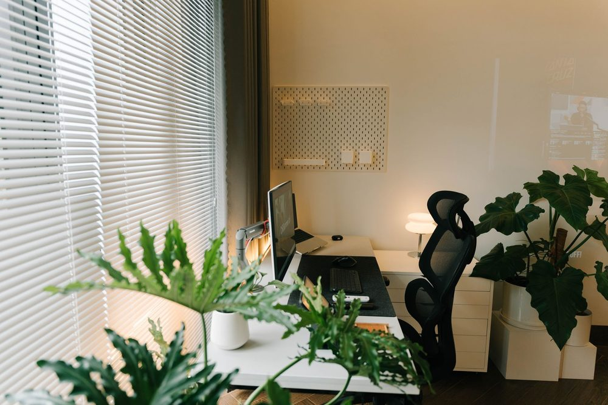
Day 4
Scenario switchboard: household modes first
In this apartment
Neha wants to create a switchboard for her small apartment in Delhi to streamline hosting.
Everyday, Movie/TV, Hosting, Cleaning — then chats, games, mixed-age.
Today's output: four household modes on a card, plus optional party overlays.
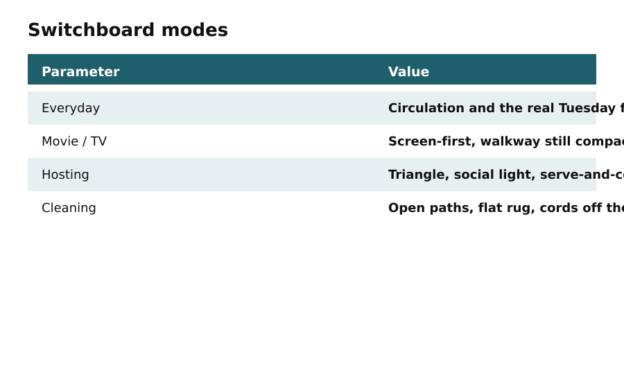
Household modes first. Party types are overlays.
Everyday mode: circulation and the real primary focal (often the TV) win. Movie/TV mode: seats may square more toward the screen; keep a compact walkway. Hosting mode: triangle, social light, host loop. Cleaning mode: paths open, rug corners flat, cords off the floor.
Intimate chats, game nights, and mixed-age gatherings are overlays on Hosting, not a second operating system. Mark five movable pieces. Store them near the room.
Before you move on
Label Everyday / Movie / Hosting / Cleaning
Then chats, games, mixed-age if you host those
Mark five movable pieces
Chapter opener
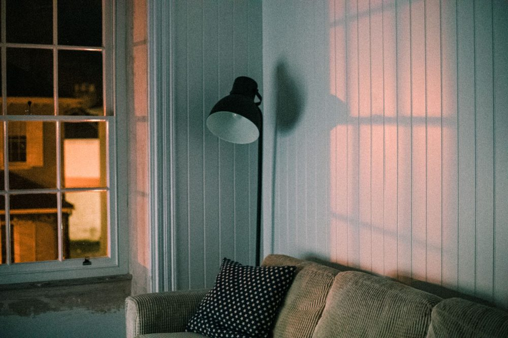
Chapter
Printable 48-hour checklist
This is the canonical 48-hour protocol as tick boxes. It is not a second plan. If a number here disagrees with the measurement legend, the legend wins.
Day 1 · Day 1 ticks: circulation, seats, focals
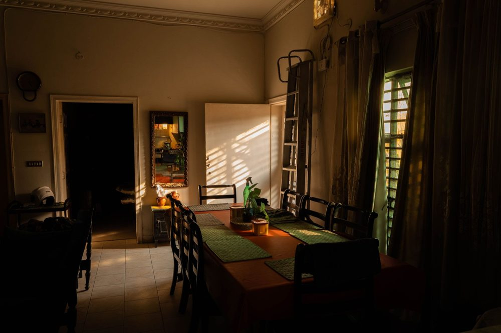
Day 1
Day 1 ticks: circulation, seats, focals
In this apartment
Ravi lives in a 1BHK apartment in Pune with a 9-foot living room. He often finds conversations with friends awkward due to the seating arrangement. Following the 48-hour action checklist, he aims to improve the flow without buying new furniture.
One protocol. Measure with the legend.
Today's output: Day 1 ticks. Do not invent extra hours.
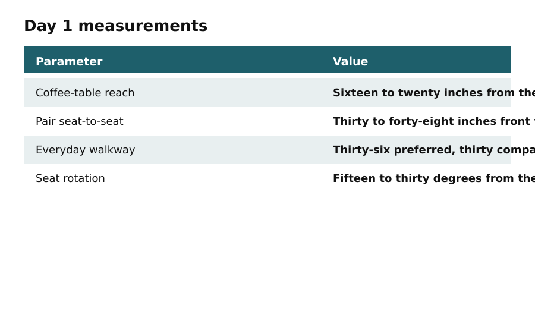
Pairs are not group circles.
Scan doors, glare, bottlenecks. Name primary focal, secondary focal, social anchor. Rotate seats 15–30° from the wall-facing start. Set conversation angle by sitting, not by reusing the rotation number. Coffee-table reach 16–20 inches from the seat edge. Pair seat-to-seat 30–48 inches. Walk test on the everyday path: 36 preferred, 30 compact. Do not use 60–84 inches for a two-person cluster — that band is for group circles.
Mini tests: sit (eye contact without a sharp neck turn), walk (kitchen path not between faces), voice (soft speech carries inside the zone diameter).
Do this
Conduct a discovery scan of the room.
Choose a primary focal point for conversation.
Rotate main seats toward the focal point.
Before you move on
Conduct a discovery scan of the room.
Choose a primary focal point for conversation.
Rotate main seats toward the focal point.
Day 2 · Day 2 ticks: light, clap, host loop
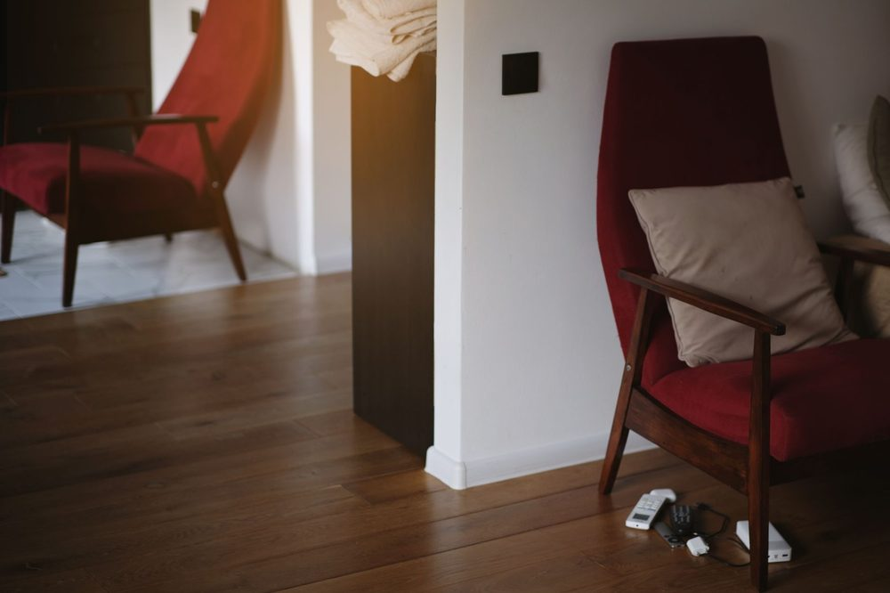
Day 2
Day 2 ticks: light, clap, host loop
In this apartment
Ravi continues his work on the drawing room in Pune, focusing on refining the arrangement for better conversation flow. He aims to make the space more inviting for his guests during weekend gatherings.
Polishing the arrangement enhances comfort and accessibility.
Today's output: Day 2 ticks. Same protocol as the canonical chapter.
Twenty-four inches is never the primary everyday route.
Carve the loop. Clap test. Social lamps on faces, not behind heads. Host loop both directions. Quick swaps of lamp, rug, or side table only to hit the legend — not a new geometry.
If a door or window pinch exists, keep it short and labeled. It is not permission to run the whole room at 24 inches.
Do this
Define a clear traffic loop from the door to each seat.
Add soft furnishings to reduce echo.
Lower tall decor that obstructs sightlines.
Before you move on
Define a clear traffic loop from the door to each seat.
Add soft furnishings to reduce echo.
Lower tall decor that obstructs sightlines.
Chapter opener
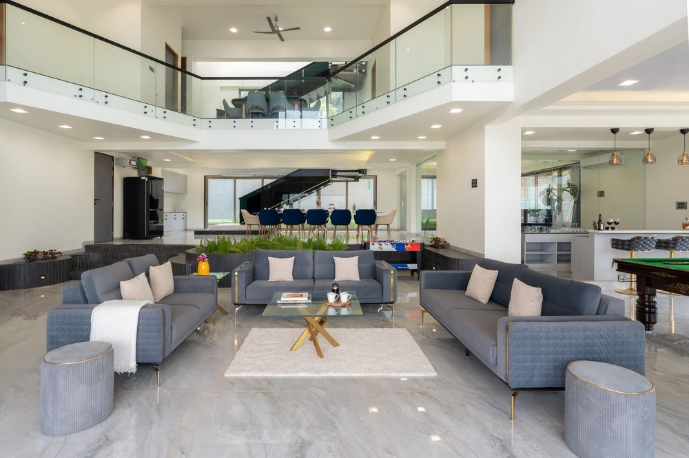
Chapter
Print, sketch, measure, test
These pages are blank working sheets. Print them, sketch the room, write the legend numbers, then move furniture. They are not finished layouts to copy.
Day 1 · Blank sheet: before
Day 1
Blank sheet: before
In this apartment
Ravi lives in a 1BHK apartment in Pune with a small 9-foot living room. He often finds that guests feel awkward during gatherings. By using the layout templates, he aims to create a more inviting space for conversation.
Print → sketch → measure → test.
Today's output: a before sketch with doors, windows, and furniture blocks.
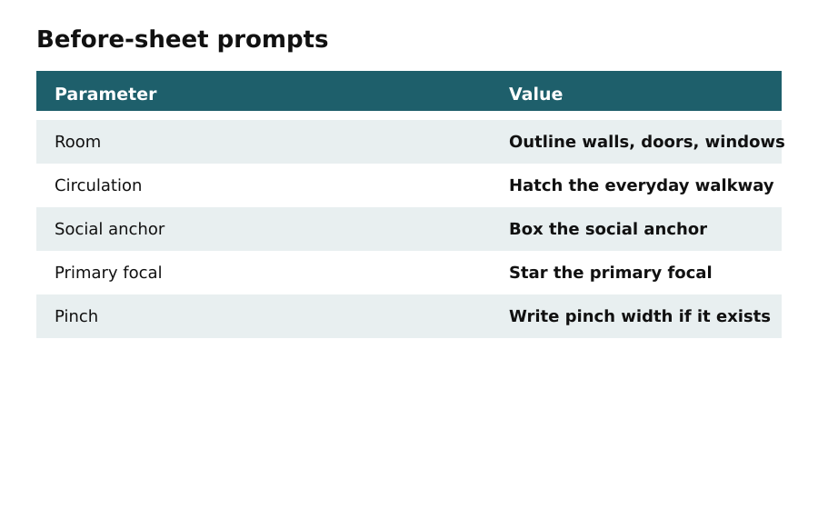
Fill this on paper. The figure is a prompt, not a plan.
On paper, draw the room outline. Mark door swings. Mark the everyday path as a hatched walkway. Write three labels: primary focal, social anchor, pinch (if any). Do not decorate the sheet.
Before you move on
Print or copy a grid
Sketch before
Write legend numbers on the page
Day 2 · Blank sheet: walkway and rotation
Day 2
Blank sheet: walkway and rotation
In this apartment
Anjali, living in a Bengaluru rental with a load-bearing wall, needs to optimize her seating arrangement for her drawing room. She uses the templates to visualize the best layout for her space.
Templates provide a structured approach to layout design.
Today's output: walkway masks at 36 / 30 / pinch, and rotation arcs — not conversation-angle arcs.
Twenty-four inches is never the primary everyday route.
Lay tape for preferred 36 inches and compact 30 inches. Mark a short pinch only where the door or a column forces it. Seat rotation overlays are 15°, 22°, or 30° from the wall-facing start. They are not 90–120° conversation angles.
Seat rotation and conversation angle are different measurements.
Day 3 · Blank sheet: after and sit-test
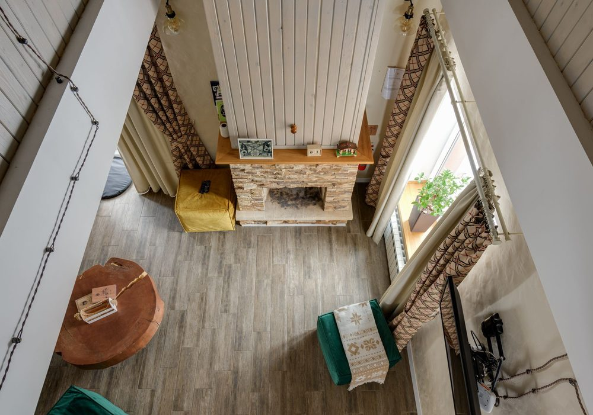
Day 3
Blank sheet: after and sit-test
In this apartment
Deepak is rethinking his Mumbai flat's drawing room, which has a window on only one side. He uses the templates to sketch out a new layout that maximizes light and conversation.
Detailed templates facilitate effective planning and execution.
Today's output: an after sketch plus sit / walk / clap results.
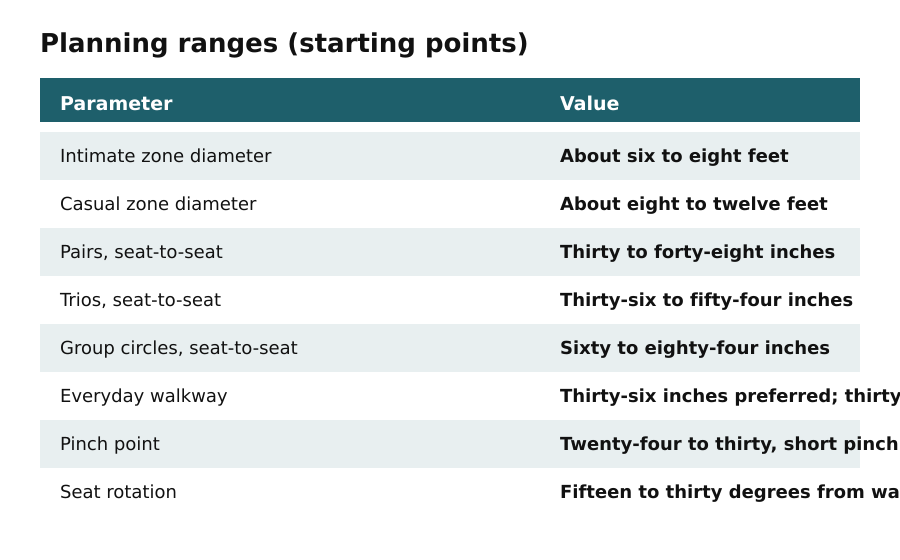
Furniture and rooms vary. Measure, then test by sitting.
Sketch the new blocks. Write seat-to-seat for each pair. Write zone diameter. Write walkway at the tightest everyday point. Sit in every seat. If everyday living got worse, the after sketch fails even if the triangle looks pretty.
Before you move on
Seat-to-seat written
Walkway written
Sit, walk, clap
Chapter opener
Chapter
Conversation Flow Mapping for Indian Apartments
City names are illustrations. Use the same measurement legend. The 24-inch walkway in older diagrams was a pinch, not a standard.
Day 1 · Mapping Your Space
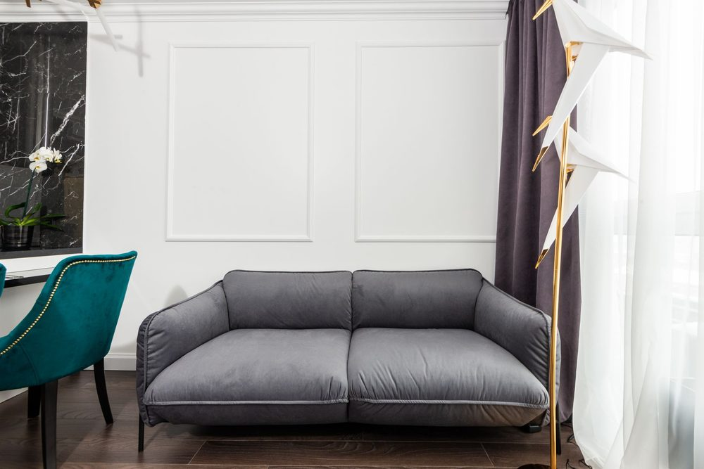
Day 1
Mapping Your Space
In this apartment
Ravi lives in a 1BHK in Pune with a 9-foot living room. He wants to create a welcoming environment for his friends during game nights. By mapping out his space, he can identify key areas for seating and movement.
Map focals and the social anchor before you rotate anything.
Today's output: furniture list, primary focal, social anchor, everyday path.
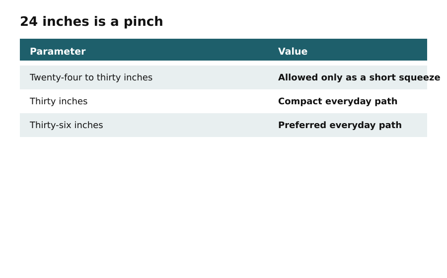
Never the primary everyday circulation route.
Walk at guest eye height. A stool used as a pivot is seating relationship, not circulation. If you buffer a walkway at 24 inches, label it a short pinch and keep the main route at 30–36.
Before you move on
Walk the room at guest eye level
List all furniture and movable pieces
Identify focal points and seating zones
Day 2 · Seating Angles and Proximity
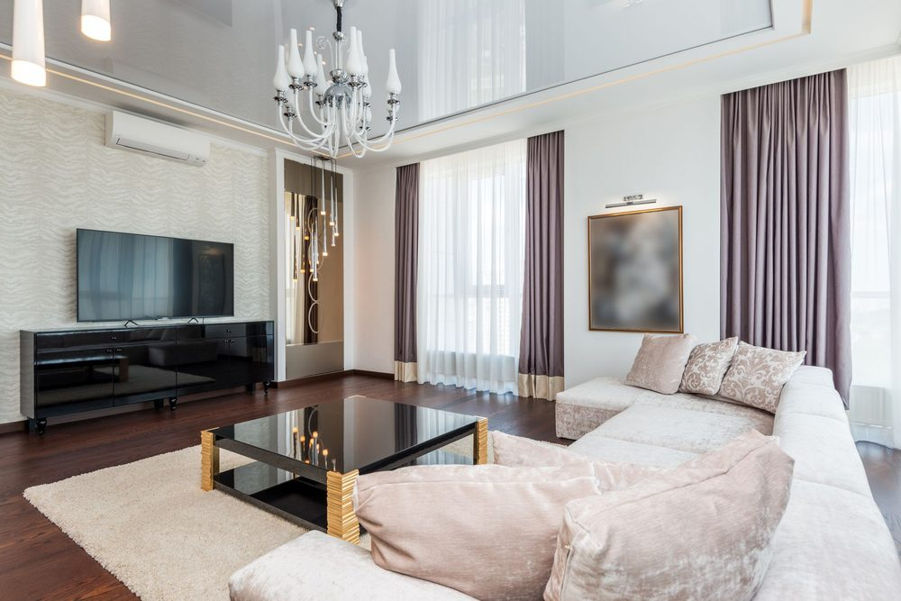
Day 2
Seating Angles and Proximity
In this apartment
Neha, living in a compact Bengaluru rental, wants to ensure her guests can engage comfortably during gatherings. She focuses on seating angles and proximity bands to facilitate conversation.
90–120° is conversation angle. 15–30° is seat rotation. 30–48 inches is pair seat-to-seat.
Today's output: two angle numbers and one seat-to-seat number for each pair.
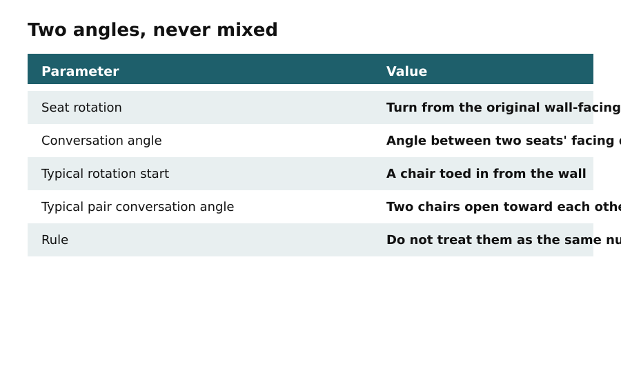
Seat rotation and conversation angle are different measurements.
For pairs, conversation angle (viewing directions) is often about 90–120°, with about 100° to the sofa as one example. That is not seat rotation. Rotate each chair 15–30° from the wall, then sit to confirm the conversation angle.
Furniture and rooms vary. Measure, then test by sitting.
Seat-to-seat, front to front: pairs 30–48 inches; trios 36–54 inches; group circles 60–84 inches. Intimate zone diameter 6–8 feet and casual 8–12 feet describe the cluster size, not the gap between two chair fronts.
Before you move on
Arrange seating at preferred angles
Ensure proximity bands are respected
Test the seating arrangement with friends
Day 3 · Creating Movement Loops
Day 3
Creating Movement Loops
In this apartment
In a Mumbai flat with a window on only one side, Aditi needs to create clear pathways for movement during her gatherings. She focuses on establishing entry and host paths that avoid cutting through seating areas.
Entry, host serve, host collect. No dead ends. No path between paired faces.
Today's output: three sketched paths — entry, serve, collect.
Entry to a perch or host station. Kitchen → serving surface → guests → collection → kitchen. If a loop dead-ends, people reverse through the cluster.
Before you move on
Sketch entry and host paths
Ensure pathways are clear
Test movement loops during gatherings
Day 4 · Weekly reset: measurable checks
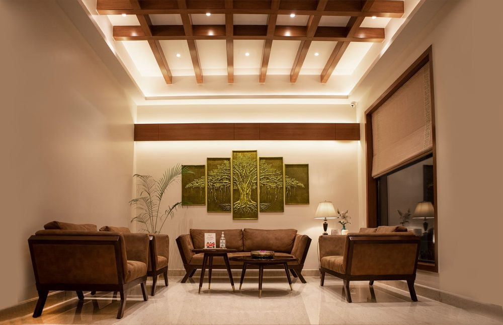
Day 4
Weekly reset: measurable checks
In this apartment
After hosting several gatherings, Priya in a 1BHK in Delhi wants to maintain her optimized conversation flow. She uses a weekly reset checklist to ensure her space remains inviting and functional.
A reset is a pass/fail list, not a vibe.
Today's output: seven yes/no checks. If any fail, that is the only work this week.
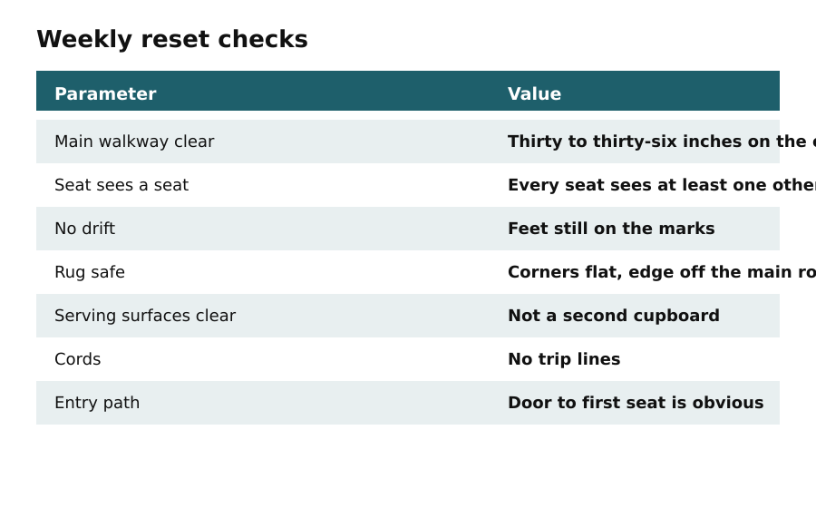
Yes or no. Not 'tidier.'
Is the main walkway clear at 30–36 inches (pinch labeled if it exists)? Can every seat see at least one other seat? Have any pieces drifted off their marks? Is the rug still aligned, corners flat, not on the main route? Are serving surfaces clear? Are cords a trip hazard? Is the entry path clear?
Lighting and textiles can refresh after the checks pass. Cleaning mode is part of the switchboard, not a mood.